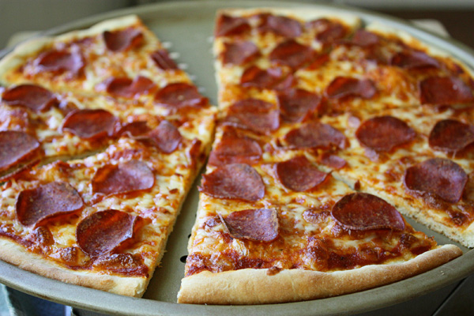
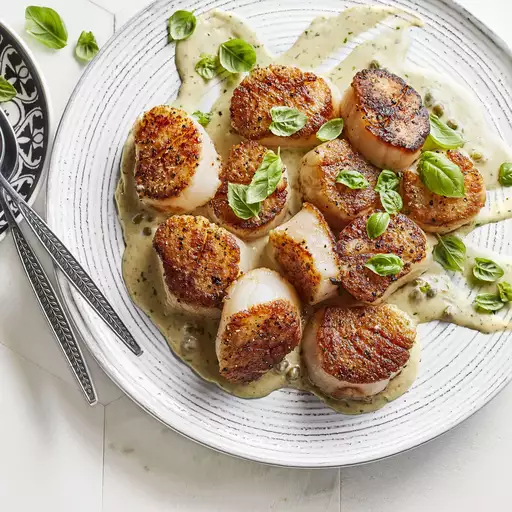

Recipes

Pepperoni Pizza
This pepperoni pizza recipe produces a quick and easy classic! Delicious homemade pizza crust and tomato sauce have never been easier.

Stuffed Tomatoes
This delicious scallop dish only takes a few minutes to make and is to die for. Serve the scallops as they are or with some crusty bread, rice, or pasta.
 Scallops with Pesto Cream Sauce
Scallops with Pesto Cream Sauce
Garlic, Parmesan cheese, fresh basil, and toasted nuts turn brown rice into a superstar stuffing in this Italian-inspired stuffed tomato side dish that's cooked ...